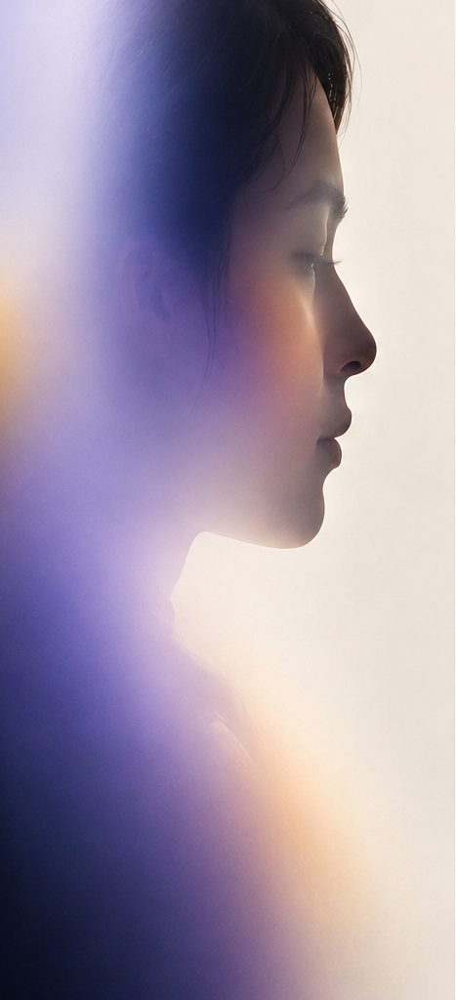
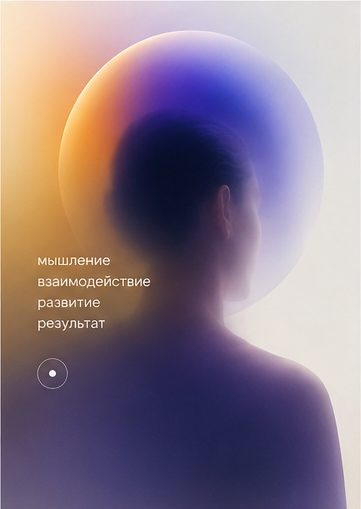
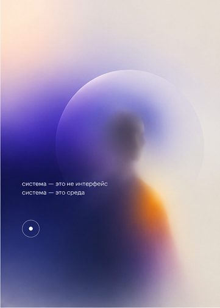
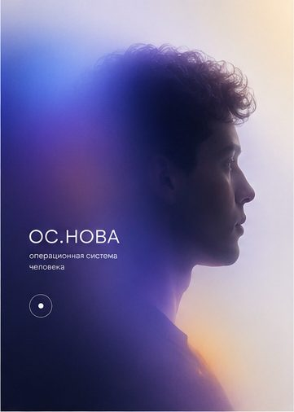
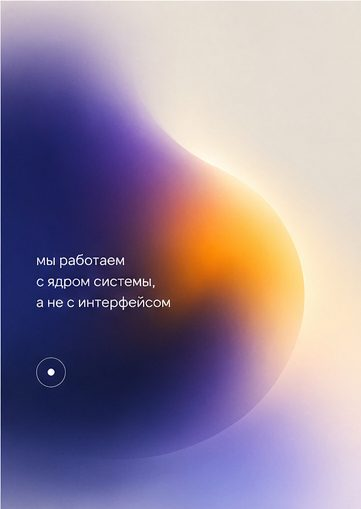

Диагностируем ключевые сферы, находим психологический механизм проблемы и подбираем точечную работу до изменений в реальной жизни.
Каждый запрос — точка на карте. На диагностике мы находим, как они связаны между собой.
На сессии мы работаем не только с мыслью о проблеме, а с самим механизмом реакции. Когда он меняется, становится доступен другой, более естественный способ отвечать на ситуацию — без прежнего напряжения, страха или автоматизма.
Вместе с новой реакцией высвобождается ресурс, который раньше был связан старым сценарием: спокойствие, энергия, интерес, уверенность, способность действовать или занимать другое место в отношениях и бизнесе.
Разбираем ключевые сферы жизни и ваш запрос, чтобы увидеть не только симптом, но и связанные с ним точки.
Собираем карту работы: что именно влияет на состояние, решения и поведение.
Подбираем специалиста под конкретную задачу. Одна сессия — одна фокусная точка работы.
Отслеживаем, как меняется реакция в реальных ситуациях и какой новый ресурс становится доступен.

Вы понимаете, над чем работаете, зачем нужна каждая сессия и где проверять результат.
клиентов отмечают решение запроса уже после 1-й сессии
*по внутренней статистике Основыгода опыта у наших специалистов, которые регулярно повышают квалификацию в работе с разными сферами жизни
Не требуется убеждать себя, контролировать мысли или ежедневно выполнять специальные практики.
Вы видите результат там, где раньше возникала проблема: в решении, разговоре, переговорах, отношениях или стрессовой ситуации.
Сессия не выбивает из привычного ритма и не требует долгого восстановления после работы.
Разбираем видение будущего, состояние, энергию, отношения, деньги, бизнес, решения, смысл. Формируем mindmap терапии: ключевые точки, взаимосвязи и маршрут работы.
Когда запрос понятен: страх, конфликт, откладывание решения, потеря ресурса или повторяющаяся реакция. Специалист работает с механизмом, который поддерживает проблему.
Причинно-следственные связи между сферами жизни, повторяющиеся сценарии и механизмы, которые проявляются сразу в бизнесе, отношениях, деньгах и состоянии.
Перестраиваем взаимодействие с социальными и ранговыми структурами, чтобы ваши ресурсы, компетенции и потенциал реализовывались на более высоком уровне.
Ответьте на несколько вопросов — они помогут сформулировать запрос и определить подходящее направление работы.

Что клиенты замечают после работы с запросом:

Отзыв клиента
Здесь будет история: запрос, что поменялось, где это видно.
Отзыв клиента
Здесь будет история: запрос, что поменялось, где это видно.
Отзыв клиента
Здесь будет история: запрос, что поменялось, где это видно.

Расскажите, что сейчас вас ограничивает. Поможем понять, с чего лучше начать и какой формат работы подойдёт.